Prepared by Marina Scheffer. A physician-led practice rebuilt around a patient intake funnel and a weekly measurement discipline, the creative that ran alongside it, and the reporting behind every number. Each exhibit is shown next to the client document it was taken from.
The piece that transfers most directly to a practice. Not a follower count, an intake process a clinician actually reviews.
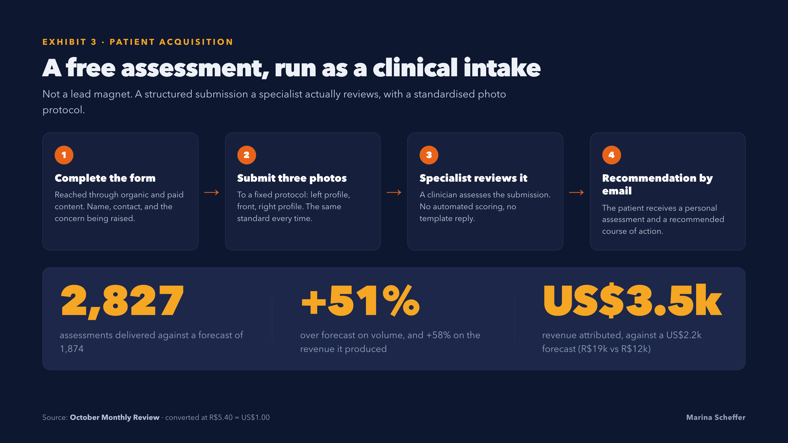
A free assessment offered through organic and paid content. The patient completes a form, then submits three photographs to a fixed protocol, left profile, front, right profile, exactly as a practice would specify. A specialist reviews the submission and the recommendation returns by email. It collected 2,827 assessments across four months, still adding roughly 950 a month by October.
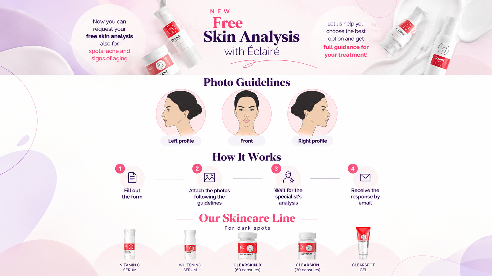
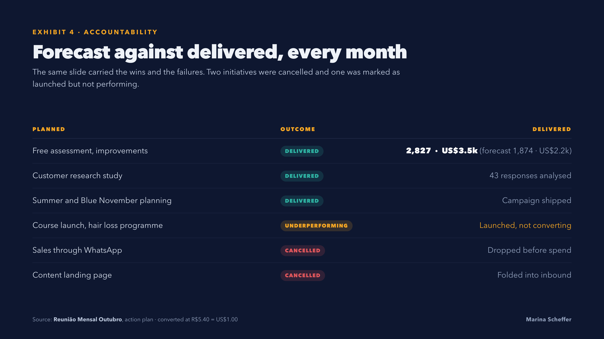
The intake was reported every month as a running total and as that month's additions, so the direction of travel stayed visible. It added roughly 950 new assessments a month by the end, and the revenue attached to it grew alongside the volume rather than lagging behind it.
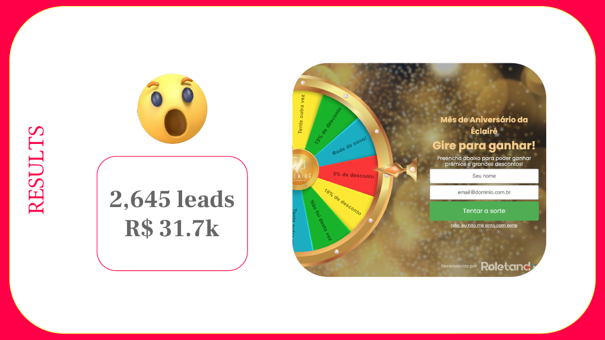
Reported monthly with the prior month beside it, so a bad month could not quietly disappear.
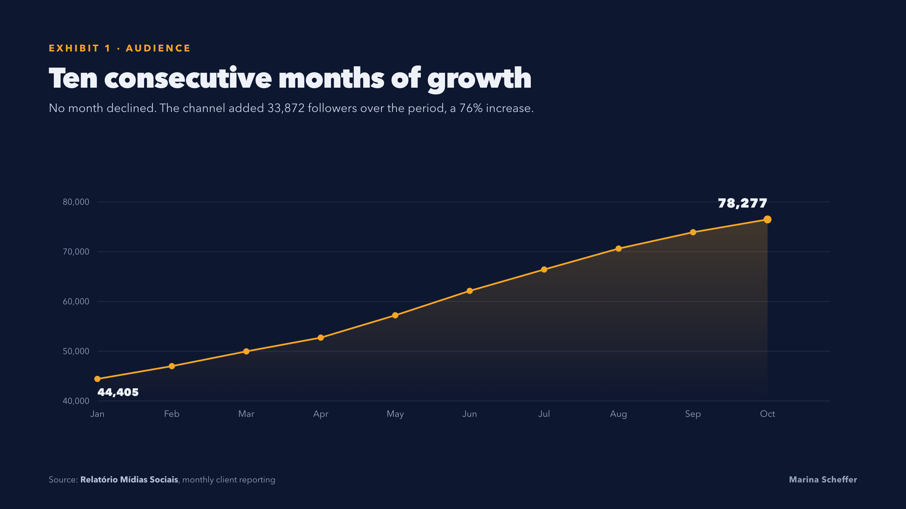
Ten consecutive months without a single decline, from 44,405 to 78,277, a 76% increase. The tracking sheet beside it carries the same numbers month by month, with the percentage change calculated against the prior month in every row.
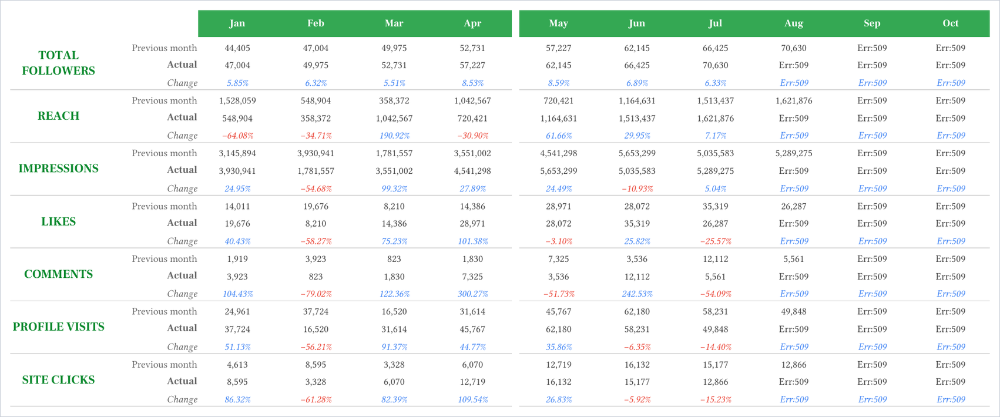
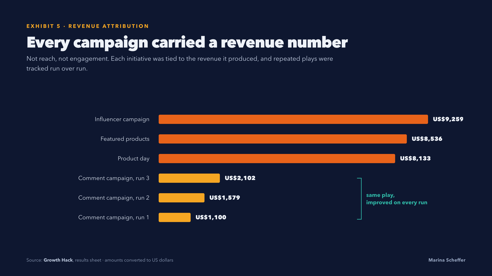
Every campaign carried a revenue figure rather than a reach figure. The three shortest bars are the same play run three times, improving on each run, which is the difference between a lucky campaign and a repeatable one.
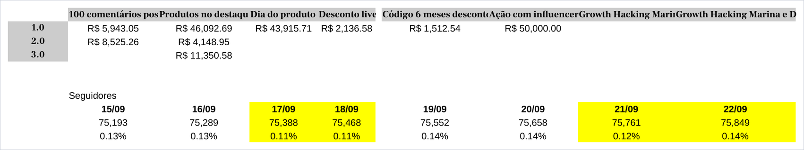
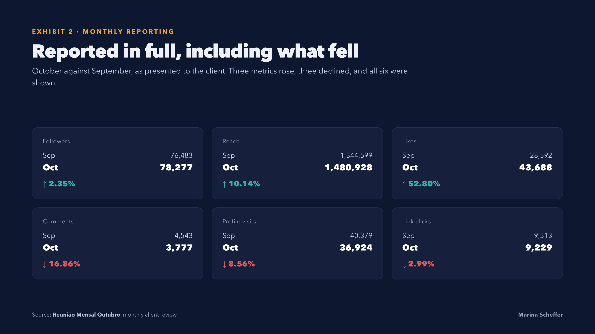
October against September. Three metrics rose and three fell, and all six were shown. Separately that month, one capture campaign returned 2,645 leads and coupon-attributed revenue moved from almost nothing in September to US$8.7k in October.
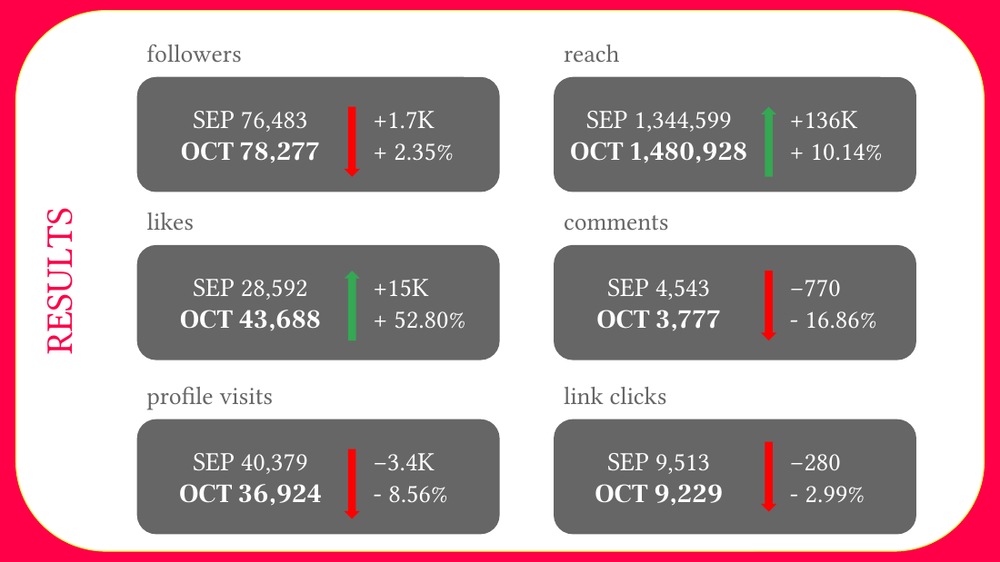
The reason the numbers moved. Every campaign ran as a scored experiment with a success criterion set before launch.
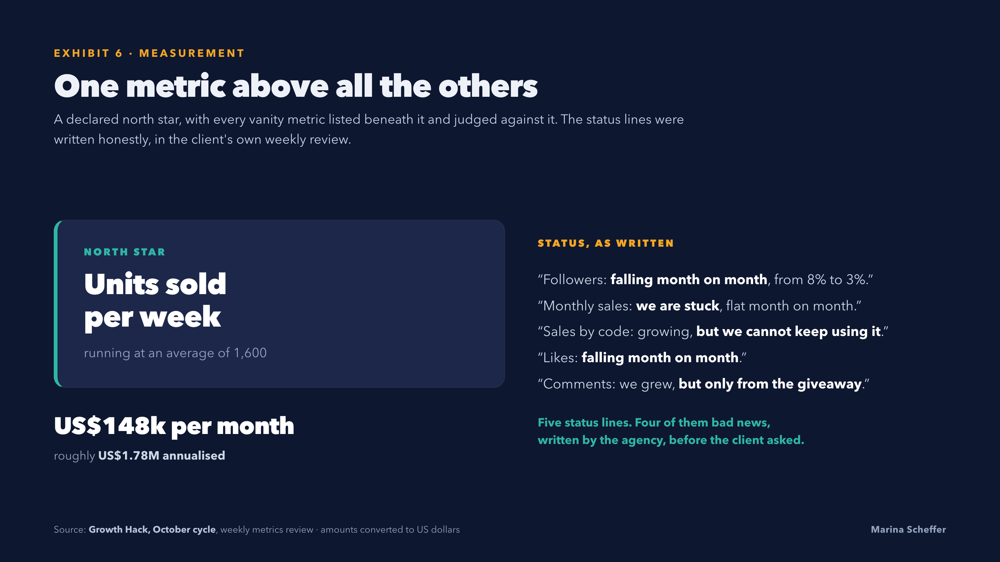
A declared north star, units sold per week, with every other metric judged against it. Four of the five status lines are bad news, written before the client asked for them. Candidate experiments were scored independently by three people on cost, probability of success and business impact, and the average decided what ran.
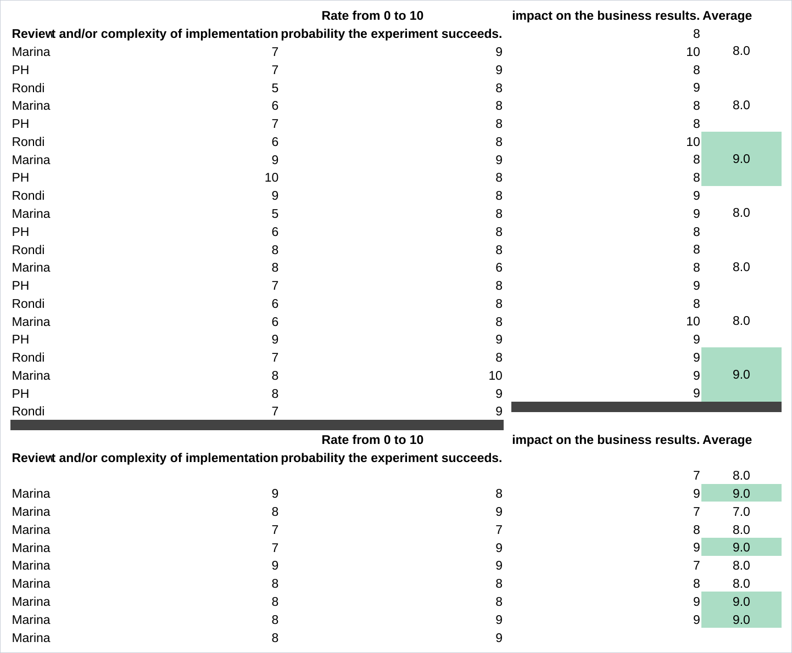
Three reels edited for a 197,000-follower health brand, and the copy written for the same account. English language, practitioner on camera.
She's a single mom of two, supporting the whole family and being told: "Your BMI needs to be 28." No one asked what got her here.
What looked like a motivation problem was actually exhaustion, iron deficiency, low thyroid and high inflammation, and no one had tested any of it, until now. DM me "PROCESS" if you're done guessing and ready for a plan that fits your life.
Everyone says it's a shared journey. But when it's time to carry the weight, it rarely feels equal.
Support is showing up for the hard parts together. If you're ready to step up and be the best you can be in your fertility journey, DM me "READY".
Two are Portuguese-language audiences in Brazil. The methods carry over; the language does not.
A new presence in endometriosis, urogynecology and integrative gynecology. Authority content plus paid media, with a funnel built to attract, educate and convert new patients. Past 10,000 followers in under eighteen months.
The account behind every exhibit above. Strong engagement, inconsistent sales, and nothing linking the two. Rebuilt around a weekly measurement ritual, a declared north star and scored experiments.
Content strategy and production for one of the largest pediatric audiences in its market. 400,000+ engaged followers in under two years, 100M+ reach, now past 712,000.